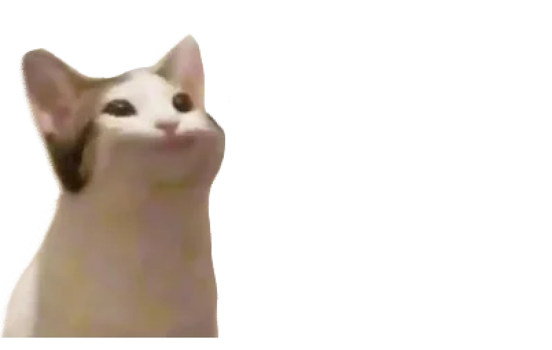
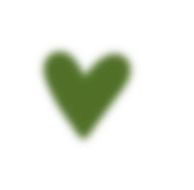

You’re awesome! You’re just incredibly cool!
И ты крутой не только сейчас. В течение этого года ты делал много классного. Давай вспомним:
Ты придумал гениальный план — делегировать Ване работу на Марию — и провёл с Танечкой две недели в Таиланде. Там даже спас её от стаи волков.
Ты переехал в Батуми. Благодаря этому потом встретился с Никитой Войтиком, Костей и Дианой, Гудковым, Цыпой и Андреем. Открыл ИП и получил ВНЖ в Грузии. Ездил с мужиками в путешествие по Грузии. Привёз родителей к себе. До этого привёз маму и устроил ей самый лучший отпуск и день рождения в её жизни, сделал VPN для папы.
Ты был лучшим психологом для родных и сумел собрать их за столом переговоров. Находил внутреннюю мотивацию для походов в качалку. Трезво мыслил — без травы и алкоголя. Радовал мам цветочками.
А ещё ты отрастил бороду и усы! Выучил грузинский алфавит! Изучал покупку недвижимости в Батуми! Успокоил Таню бесконечно раз. Продуктивно работал. Сдал на права на мотоцикл!!! Купил свой первый мотоцикл!!! А потом сразу второй. За 3 месяца 2 мотоцикла!…
Съездил с Ваней на Хакатон. Снял квартиру-отель с бассейном и сауной на крыше. Проходил интервью. И даже ИИ-интервью с сертификатом! Изучил банное искусство. Сделал свой сервер. Много ездил кататься на мотоциклах с ребятами.
И всё это — в твои 20 лет.
Ты легенда. И это только начало.